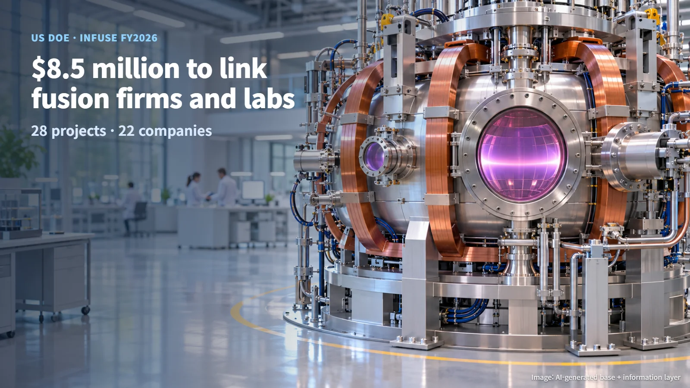
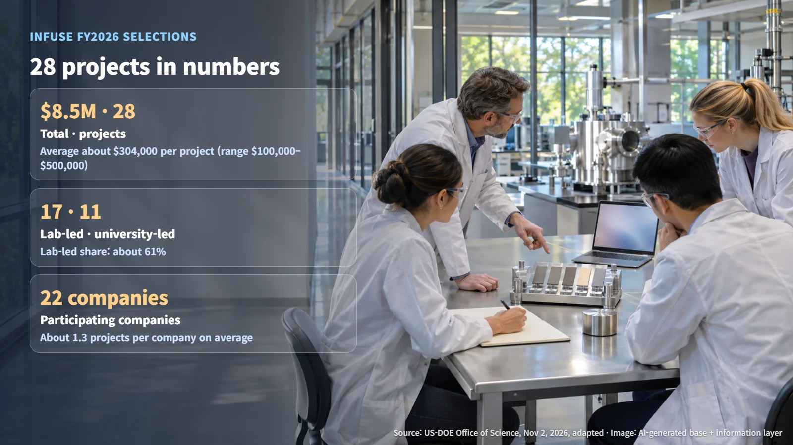
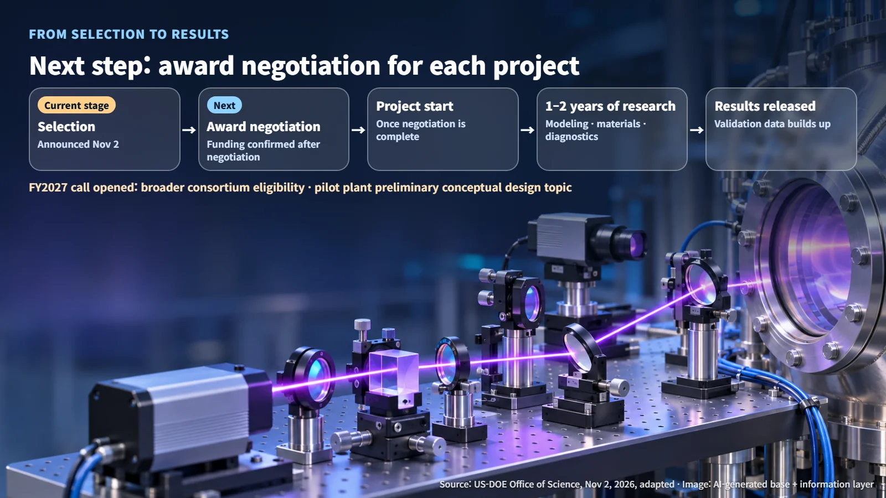

United States · Fusion
$8.5 Million to Connect Fusion Companies with National Labs: Inside DOE's 28 INFUSE Projects
DOE's Office of Science selected 28 INFUSE projects worth $8.5 million that connect private fusion companies with national labs and universities.
Every time fusion energy makes the news, a natural question follows: how do young companies tackle research this hard? The number of private fusion startups keeps growing, yet few of them can afford to own every large experimental facility and employ every specialist they need. A new announcement from the US government shows one way it is helping close that gap.

28 Projects and Where the $8.5 Million Goes
On November 2, 2026, the US Department of Energy (DOE) Office of Science announced that it had selected 28 projects totaling $8.5 million under the fiscal year 2026 round of INFUSE, the Innovation Network for Fusion Energy. INFUSE is a public-private partnership program that pairs private fusion companies with national laboratories and universities so they can work together on the scientific and technical problems that come up on the road to commercialization.
Of the selected projects, 17 are led by national laboratories and 11 by universities, with 22 companies taking part. The projects were chosen through competitive peer review, a process in which experts from the same field compare and evaluate the proposals.
The key idea behind this structure is connection. A company brings a problem it wants solved, and a national lab or university brings the equipment and expertise to work on it alongside the company. This gives a company a way to test a question using public research capabilities before it builds research facilities of its own. Like the German-American virtual fusion institute we covered in October, the Max Planck Columbia Center, these projects follow the same pattern of several institutions sharing the work on a single problem.
How Much Is One Project Worth?
DOE says each project has a budget of $100,000–$500,000 and a research period of one to two years. The published figures allow a few simple calculations:
- Average per project: $8.5 million ÷ 28 projects = about $304,000
- Share led by national labs: 17 ÷ 28 projects = about 61%
- Average projects per company: 28 projects ÷ 22 companies = about 1.3
An average of about $304,000 per project sits roughly in the middle of the published $100,000–$500,000 range. That is a scale suited to short collaborations that spend one to two years on a single focused question. Roughly six in ten projects are led by national labs and four in ten by universities. Because 1.3 is an average, it indicates that some companies are involved in more than one project.
What this changes is speed. Within one to two years, a company can come away with concrete answers, such as measurement data or simulation results, and feed them into its next design decisions. Many small projects running in parallel is the defining feature of this round of selections.

Modeling, Materials and Diagnostics: Why Fusion Companies Turn to the Labs
The selected projects cover modeling and simulation, materials science, plasma diagnostics and enabling technologies. The general principles below explain why each area matters.
- Modeling and simulation: Fusion works by confining a plasma, an extremely hot state of matter in which atomic nuclei and electrons have separated, so that reactions can take place. Small disturbances in a plasma can easily grow, so researchers calculate its behavior on computers before building a device. Those calculations are then checked against experimental data.
- Materials science: The high-energy neutrons and heat released by fusion reactions constantly strike the inner walls of the device. Choosing and testing materials that hold up over time determines how long a device can operate.
- Plasma diagnostics: Diagnostics are the techniques used to measure the state of a hot plasma directly. Just as a doctor uses imaging equipment to look inside the body, researchers use diagnostic instruments to look inside the plasma.
These three areas form a single chain. Plasma measurements from diagnostic instruments are compared side by side with computer models, and validated models then predict the loads that wall materials will face. National laboratories and universities have built up this kind of equipment, data and experienced staff over many years. What an INFUSE project leaves a company with is validation data to support its designs.
After Selection Comes Negotiation, and Then the 2027 Call
The current stage of this announcement is "selected for award negotiation." DOE notes that selections may be withdrawn during the negotiation process. Funding is confirmed after negotiation is completed for each project, and research begins on each project as its negotiation concludes.
The path ahead runs in this order: selection announcement (November 2) → award negotiation for each project → project start → one to two years of research → release of results.

Ahead of this announcement, DOE also opened its request for applications for fiscal year 2027. The new call expands eligibility for consortia, meaning groups of institutions that apply together, and introduces a topic on reviewing preliminary conceptual designs for fusion pilot plants. While the fiscal year 2026 projects address individual technical problems such as modeling, materials and diagnostics, the fiscal year 2027 call widens the scope to topics in which multiple institutions review the concept of an entire power plant together.
The milestones to watch are when award negotiations are completed for each project, the research scope and published results of each project, and the requirements and follow-on selection schedule for the fiscal year 2027 call.
The road to commercial fusion is built as much from small validation projects like these, accumulating one by one, as from any single giant machine. Watch how the 28 questions behind this $8.5 million figure, and their answers, are made public, and you will get a much clearer picture of where fusion research actually stands.